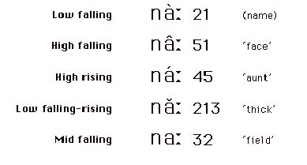

8 Phoneticians sat around the UCLA Phonetics lab and discussed these labels for the tones. They listened repeatedly to the words and then measured the pitch (fundamental frequency) values and came up with following thoughts for this one speaker on this one occasion.
The first column is the gloss. The second column is the estimated tone level by listening. The third column is the tone level based on the pitch analysis. The fourth column is the measured frequency range. The last column is the traditional name for this tone.
| name | 2 1 | 3 2 | 100 - 89 | low |
| face | 4 1 | 5 1 | 140 - 70 | falling |
| aunt | 3 5 | 3 5 | 105 - 140 | high |
| thick | 2 1 3 | 3 2 4 | 100 - 85 - 120 | rising |
| field | 3 2 3 | 3 1 3 | 100 - 93 | mid |